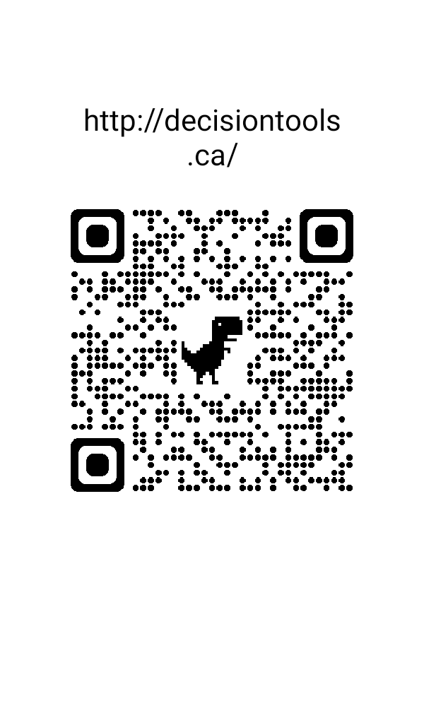

For urgent situations. Get an AI prompt that helps with immediate decisions while preserving future options.
📚
Pattern Library
Browse common scenarios. Get AI prompts for specific situations with built-in STOP conditions.
🔍
Deep Analysis Path
For complex situations. Get an AI prompt for systematic observation and pattern identification.
Quick Decision Path
⚠️ URGENT SITUATIONS ONLY
Use this when you need to make a decision quickly while preserving your ability to choose differently later.
Be specific about timing, pressure, and what happens if you don't act now.
Pattern Library
Select a common scenario to get a specific AI prompt with built-in STOP conditions:
Deep Analysis Path
🔍 OBSERVATION FIRST
This approach helps you observe systematically before deciding. The AI will guide you through pattern identification.
Start with observable facts only. We'll add interpretations in the AI conversation.
Your AI Prompt
⚠️ STOP CONDITIONS INCLUDED
Every option in this prompt includes "Stop if" conditions. If any stop condition occurs, pause and reconsider.
How to use this prompt:
1. Click "Copy Prompt to Clipboard" above
2. Open ChatGPT, Claude, or any AI assistant
3. Paste the prompt and follow the AI's questions
4. After 3-5 exchanges, the AI will provide options with STOP conditions
5. You choose which option fits your situation
Note: These AI prompts help you organize your own observations. They are not professional advice. For medical, legal, or financial matters, consult appropriate professionals. Your judgment guides all decisions.
Share This Tool
Show the QR code below to someone in person:
They can scan it with their phone camera

📱 Scan with phone camera https://decisiontools.ca
Direct link to share:
https://decisiontools.ca
How to Share:
In person: Show QR code on your screen for others to scan
Digitally: Share the link above via message or email
No accounts needed: Anyone can use it immediately
Works globally: Browser translation available
Share with someone facing a decision who could use clearer thinking methods.
How This Stays Available
Current Status:
✓ Free to use • ✓ No accounts needed • ✓ Your copy to keep
✓ Official domain: decisiontools.ca
✓ Contact: contact@decisiontools.ca
Tool development in progress.
Optional support options coming in future updates.
How This Tool Works:
Builds on what you can actually observe and track
Respects your specific situation and choices
Includes clear "stop if" safety conditions
You maintain control and can adjust anytime
No one excluded by inability to contribute
Privacy-first: Use your browser or preferred tool for translation
For now: Use it. Adapt it. Share it. That's support enough.